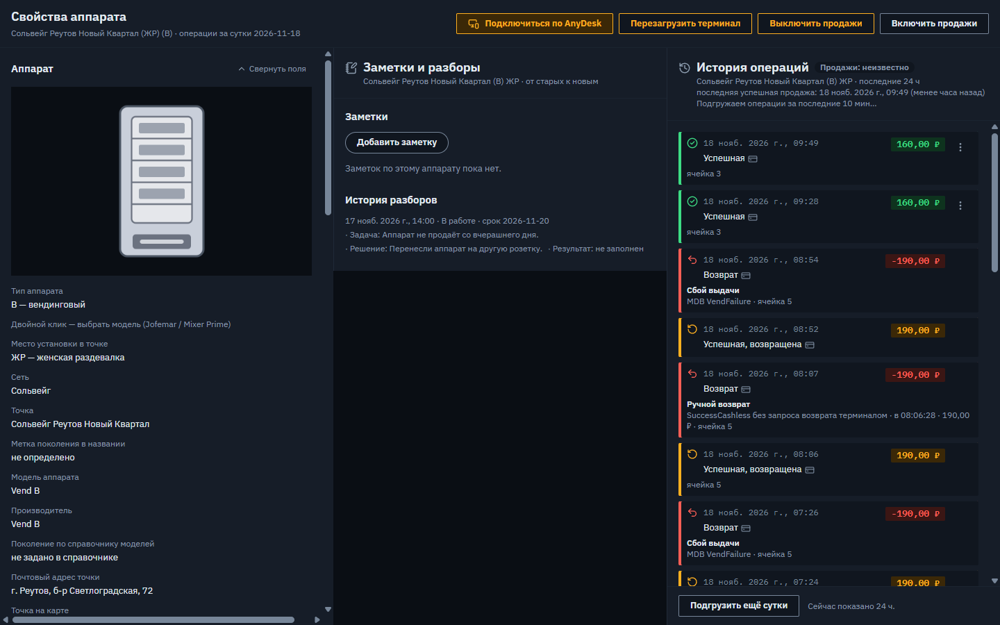
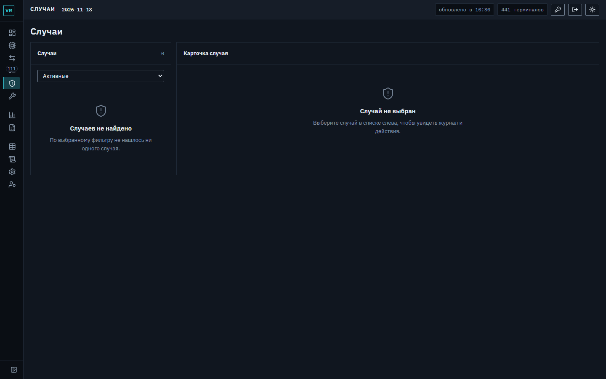
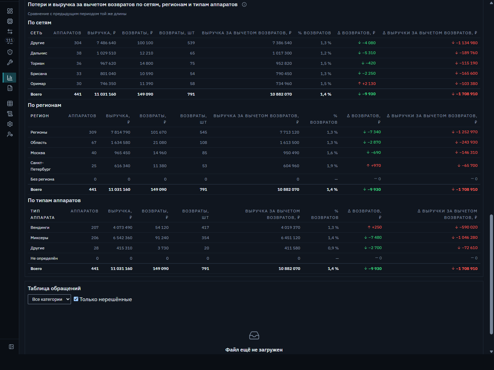
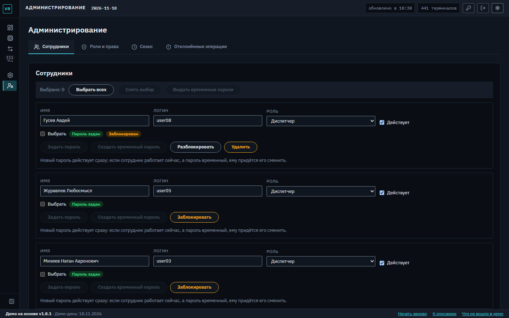

Весь вендинговый парк — под контролем
Следите за продажами и связью аппаратов, вовремя замечайте сбои и планируйте обслуживание. Vendrail показывает, какие точки требуют внимания и как меняется выручка по сетям, регионам и типам аппаратов.
Открыть демоДемо начинается с обучающего тура и работает на вымышленных данных.
От всего парка до отдельного аппарата
Откройте карту проблемных точек, затем посмотрите, как устроена история операций отдельного аппарата.
Обзор парка
Сводка состояния аппаратов, возвратов и очереди разбора на одном экране. Карта показывает точки, где аппараты требуют внимания.
Свойства аппарата
Модель, состояние связи и история продаж и возвратов с номерами ячеек и причинами сбоев.

Что не вошло в демо
Эти разделы и вкладки доступны в полной версии программы.
Работа со случаями
Отбор по статусу и история действий по обращению.

Плановое обслуживание
Календарь обслуживания площадок и распределение работ между техниками.

Сводка периода в отчётах
Ключевые показатели основного периода в сравнении с предыдущим и состав открытых случаев.

Статистика по периодам
Потери и выручка за вычетом возвратов по сетям, регионам и типам аппаратов в сравнении с предыдущим периодом.

Журнал аудита
Доступ к журналу действий по выбранному периоду.

За пределами тура
Настройки рабочего места и управление доступом показаны отдельными кадрами.
Настройки рабочего места
Настройки темы, оформления и звука уведомлений доступны в демо.

Сотрудники, роли и права
Управление сотрудниками, ролями и сеансами в разделе администрирования.
